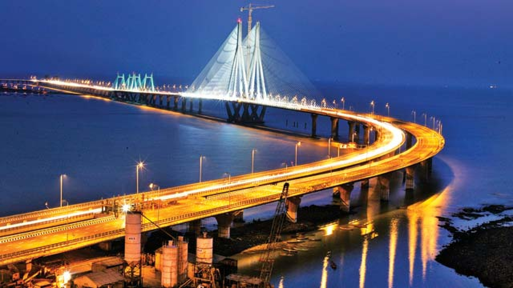

Top Places you can visit!
These are some of the top Top Places
- Marine Drives
- Gateway of India
- Juhu Beach
- Colaba Causeway
- Haji Ali Dargah
- Sidhivinayak Temple
- Girgaum Chowpaty
- Elephanta Caves
- Victoria Terminals
- Bandra Worli Sea Link 
- Prince of Wales museum
- Fashion Street
- Essel World & Water Kingdom
- National Gallery Of Modern Art
- Film City
- Global Pagoda
- Sanjay Gandhi National Park
- Kanheri Caves
- Mumbai Zoo
- Mahalaxmi Temple
16 kms from city center / 1 out of 20 Top Places To Visit in Mumbai
Marine Drive is a km long, arc shaped boulevard along the South Mumbai coast, starting from the southern end of Nariman Point and ending at the famous Chowpatty beach. The coast lines the Arabian sea and is the best place to watch the sunset in Mumbai, or even to just take a leisurely stroll by the sea any time of the day or night.
The Marine Drive is also known as the Queen's necklace on account of its shape and yellow streetlights. It makes for a spectacular view at night - you can go to either end of Marine Drive after sunset and see the lights glowing in a perfect arc all along the coast. People come to walk here in the evening to experience the brilliant sunset. It is also one of the Top Places people visit late at night, and you will find vendors selling chai and sutta at all hours. The sound of the waves, a view of the Mumbai skyline and the starry sky easily make Marine Drive one of the most romantic spots in the city.

Gateway of India 18 kms from city center / 2 out of 20 Top Places To Visit in Mumbai
The Gateway of India is, without doubt, one of the most popular tourist hotspots of Mumbai. It is located at Apollo Bunder Waterfront and overlooks the Arabian Sea in the most beautiful way. One of the most distinguished monuments in Mumbai, it was built in the year 1924 by famous architect George Wittet as a commemoration of the visit of King George V and Queen Mary to Mumbai. The imposing structure of the monument is a beautiful confluence of Indian, Arabic and Western architecture and has become a popular tourist hub in the city
Nicknamed 'Mumbai's Taj Mahal', the foundation of this landmark was laid in 1911 and was inaugurated 13 years later in 1924. The structure in itself is a made of yellow basalt and solid concrete and is embellished with numerous Muslim and Hindu motifs as well. The basalt arch of the Gateway served as the entry and exit access to India through waterways before independence and was the exit point from where the last British ship left India for England. There are statues of Swami Vivekananda and Chhatrapati Shivaji that have been installed near the Gateway as well. The view from the sea of the Gateway complex, especially at night, is as beautiful as that of the Queen's Necklace from the Marine Drive. An imposing edifice, the Gateway of India is a symbol of India's rich history and cultural heritage
8 kms from city center / 3 out of 20 Top Places To Visit in Mumbai
Juhu beach is the longest beach in Mumbai, and arguably the most popular among tourists as well. Juhu beach is renowned for its wide variety of street food with a very typical Mumbai flavour. The nearby area of Juhu is a posh locality in Mumbai, home to a lot of famous Bollywood and TV celebrities - the most famous being Amitabh Bachhan's bungalow - and it is not very rare to spot a celebrity jogging on the beach.
Juhu beach was a big favorite with the Mumbai locals during the 90s, but it had become notorious for being very dirty because of a large number of tourists. However, in the last couple of year the BMC had made a lot of efforts to keep the beach clean. It is now cleaned almost daily, and lot of dustbins have been installed which help keep the area much cleaner than it used to be..
Colaba Causeway 18 kms from city center / 4 out of 20 Top Places To Visit in Mumbai
One of the most crowded and electrifying Top Places to visit in Mumbai is the Colaba Causeway, famous for being the shopping paradise and having endless shops to choose from. The city of a million hopes, dreams and aspirations, Mumbai has its heart in the right place despite all the floods and terrors and everything that has shaken it over the years. Winning over everything else, the Mumbai-spirit has remained undefeatable. And at the heart of the unabashed city is the bustling Colaba Causeway - an absolute must-visit. The place is mainly famous for its abundance of shopping opportunities. Lying at the western tip, Colaba Causeway feels like the pulse of Mumbai, quivering with excitement. It has a charm about it, which will suck you into its world of colourful shops, eating Top Places and boutiques like a magnet.
Known as Shahid Bhagat Singh Road formally and officially, Colaba Causeway acts as the land link between Colaba and the Old Woman's Island. It lies close to the Fort area which is a business sector and the heart of the city since the British era. From roadside vendors to glamorous boutiques, the street sells everything you can think of buying ? in different quality and prices. If movies are your thing and you want to experience how it was to watch them in halls before multiplexes took over, you can pay a visit to the old movie theatre ? Regal Cinema. Behind Regal Cinema, the Causeway leads you to the Bandstand Promenade overlooking the Arabian Sea. Here, the great Gate of India welcomes you with all its grandeur across from the majestic Taj Mahal Palace Hotel dominating the city's skyline. If the walk makes you starve for something mouthwatering, you will find the same at the many restaurants ? old and new, cafes and franchisee eatery outlets around to pacify your hunger.
Haji Ali Dargah 13 kms from city center / 5 out of 20 Top Places To Visit in Mumbai
Situated at the backdrop of a beautiful view of the sea is the shrine of Haji Ali, a wealthy merchant turned into Muslim Sufi. The Haji Ali Dargah (mausoleum) was raised in 1431 in reminiscence of an affluent Muslim trader, Sayyed Peer Haji Ali Shah Bukhari, who gave up all his worldly belongings before making a trip to Mecca. People from all walks of life and religions come here to seek blessings.
Built of glass, the tomb is a beautiful illustration of the Indo-Islamic style of architecture. A marble courtyard contains the central shrine. The tomb within the mosque is roofed by a brocaded red and green cloth, supported by an exquisite silver frame and marble columns. The main hall has marble pillars engraved with creative mirror work: blue, green, yellow chips of glass arranged in varied designs and Arabic patterns which spell the ninety-nine names of Allah. As per Islamic customs, there are different praying rooms for ladies and gents. Many famous personalities visit the shrine to seek blessings.
Siddhivinayak Temple 8 kms from city center / 6 out of 20 Top Places To Visit in Mumbai
The Siddhivinayak Temple is a revered shrine dedicated to Lord Ganesha and is one of the most significant and frequented temples in Prabhadevi of Mumbai, Maharashtra. This temple was built in the year 1801 by Laxman Vithu and Deubai Patil. The couple did not have any children of their own and decided to build the Siddhivinayak temple so as to fulfil the wishes of other infertile women. It is one of the richest temples in Mumbai and devotees visit this temple in large numbers on a daily basis. The statue of Lord Ganesha here is believed to be self-manifested.
The Siddhivinayak temple has a small sanctum housing the idol of Shri Ganesha, which is about two and a half feet wide and made out of a single piece of black stone. The trunk of the Lord tilts to the right, and a snake adorns the idol much like a thread would. The deity has four arms and is hence known as 'Chaturbhuj'. He carries a lotus in his upper right hand, a small axe in his upper left hand, a rosary in his lower left hand and a bowl full of his favourite snack 'modaks' as well. Flanked by Goddesses Riddhi and Siddhi who signify wealth and prosperity, the image of the Lord here is one that is of utmost importance to the people of faith. A temple of Lord Hanuman is also present in the premises.
Girgaum Chowpatty 15 kms from city center / 7 out of 20 Top Places To Visit in Mumbai
Popularly known as Chowpatty, the beach is located in southern Mumbai along the western railway route. This small sandy beach is a superb place to chill, and a must visit for all tourists who are seeing Marine Drive for the first time. The white sand glistens beautifully in the sunlight, as the adjoining waves dance to the movement of the pleasant breeze. This beach is a retreat from the mind-numbing and chaotic routine of the day-to-day life. Most people visit this place to unwind and relax after a long, strenuous day.
At night, the beach appears to look like a colourful fair. Children from all age groups rush to ride the Ferris wheel and merry-go-rounds, while the adults indulge in the city's famous street snacks. Visitors also head to nearby attractions and local markets, to get the most out of their day out. Never is this beach empty or deserted. You will always find one or the other person here, lazing around on the beach; or children, lost in their world, blithely building sand castles along the shore. All in all, the Girgaum Chowpatty offers fun, frenzy and delights all rolled into one, and it is worth spending a few hours here to break free from the usually claustrophobic city.
14 kms from city center / 8 out of 20 Top Places To Visit in Mumbai
A UNESCO World Heritage Site, Elephanta Caves is a specimen of rock-cut art and architecture from the times of medieval India. The caves are located on the Elephanta island which is situated at a distance of 11 km from the city of Mumbai. Natively known as Gharapurichi Leni, the Elephanta Caves that exist today are ruins of what were once elaborately painted artworks. It also provides an amazing view of the Mumbai skyline.
There are two groups of alcoves in the site of the Elephanta Caves, the first is a large group of five Hindu caves and the second one is a smaller group of two Buddhist caves. The Hindu caves contain the stone sculptures representing the Shaiva Hindu sect. The architecture of the caves dates back to the 5th and 8th centuries, but the story of their origin is still a mystery. The caves are an expression of art and a number of important imageries are sculpted here, which include 'Trimurti' or three headed Shiva, 'Gangadhar' which is a manifestation of the river Ganga as she descends to the earth and 'Ardhnareshwar', which is a representation of Shiva and Parvati in the same body. In addition to being an important heritage site, the Elephanta Caves are also an unlikely trekking destination.

15 kms from city center / 9 out of 20 Top Places To Visit in Mumbai
Victoria Terminus, a former name for the Chhatrapati Shivaji Terminus, is a modern railway station in the bustling capital city of the western state of India, Maharashtra. The marvellous structure is an awesome illustration of the Victorian-Gothic style of architecture in India. In fact, the railway station, which still functions as usual, is declared as a World Heritage Site under UNESCO. The station is always bustling with the sounds of the metro city and the locals. It could be noise and crowd for many, but some still manage to find lively colours and music in the ever so busy Victoria Terminus. It is one of the most famous historical landmarks in the country that symbolises the pre-independence India.
Victoria Terminus was constructed in 1887. It is the Central Railway Headquarter and is well-connected to all the parts of the country. It serves long-distance trains and short-distance or commuter trains which are often called local trains. The terminus indicates British Commonwealth and represents the commercial aspect of Mumbai. The railhead stands witness to the city's progress over the period and the growth of the Bollywood film industry in India.
It was here that the famous song 'Jai Ho' was shot for Slumdog Millionaire and some marvellous scenes for the Bollywood Movie Ra One. The view of the station and the population that gathers to commute on a regular basis could be overwhelming for many. Visitors can click pictures of the magnificent structure from a little distance away from the terminus. Visitors should see the building after sundown. The night lights brighten up the grand building and the view, so magnificent, will take your breath away.
9 kms from city center / 10 out of 20 Top Places To Visit in Mumbai
Officially known as Rajiv Gandhi Sea Link, this eight-lane cable-stayed bridge in Mumbai is the first project initiated by Maharashtra Government that commences West Island Freeway System. Bandra Worli Sea Link is one of the few bridges that is a cable-stayed with pre-stressed concrete-steel viaducts to hold it in place. Spanning across the arc of Mumbai's coastline, this sea link is a civil engineering wonder that reflects the modern infrastructure of the city of Mumbai. The bridge is designed to cater around 37,500 vehicles per day while reducing the time travel between Bandra and Worli by a big margin. The beauty of the Bandra Worli Sea Link is in its engineering genius which gently compliments the crystal waters it is built over. Overlooking the magnificent blue waters of Mahim Bay, this splendid architecture is a mighty sight to behold.
Undeniably, the Bandra Worli Sea Link is an amalgam of natural beauty and man-made marvel. Roll your windows down as you whizz past the bridge and let the salty sea breeze run through your hair. The spectacle of Mumbai is especially appealing from the elevation of the bridge and makes it the perfect destination to capture a few candid shots of the city in all its glory. Bandra Worli Sea Link also overlooks the Worli Bridge and has a small park located nearby. The beauty of this attraction is enhanced during the night when twinkling lights adorn the bridge.
17 kms from city center / 11 out of 20 Top Places To Visit in Mumbai
The Prince of Wales Museum is a splendid structure situated in Mumbai and is regarded as one of the heritage buildings of the city. The foundation stone of this edifice was laid down by the Prince of Wales on the 11 November 1905, and it was established as a museum on 10 January 1922. The facade of the museum is a sight to behold in itself and sits in the midst of an expansive green garden. Adorned with stone and lattice work, the architecture of the Prince of Wales Museum is a blend of Indian, Mughal and British engineering styles. Inside, the museum holds some of the most exquisite artefacts relating to the rich and diverse history of India.
Now known as 'Chhatrapati Shivaji Maharaj Vastu Sangrahalay', The Prince of Wales Museum is a Grade I Heritage Building of the city and is counted amongst one of the most prominent museums of India. The complex exhibits a myriad collection of ancient artefacts, artwork and sculptors of the country which give a unique insight into our past. The building also underwent a major renovation after which several new galleries adorning the artworks of Hindu God Krishna, textiles and Indian traditional costumes were opened. Preserved in its best form, the Prince of Wales Museum is a wonderful manifestation of India's glory and rich past.
16 kms from city center / 12 out of 20 Top Places To Visit in Mumbai
Latest trends, a variety of clothes and the delicious aroma of street food is what Fashion Street in Mumbai is all about. One of the favourite shopping hubs for the people of Mumbai, especially the students, the place offers some of the trendiest and latest fashion clothes. An array of about 150 shops which sell an inconceivable assortment of accessories and clothing makes Fashion Street a paradise for a shopaholic.
With a myriad variety of clothes, junk and bric-a-brac than any other corresponding shopping place, Fashion Street is a mind-boggling experience. You can even find the designer brands available here at a slashed price. Export quality garments are the highlight of the place attracting tourists as well, being sold at throw away price. Apart from clothes, this place located opposite the VSNL office building on M.G. Road sells a variety of accessories, hats and footwear. If you know how to bargain, this vibrant flea market is just the right kind of a place for you to shop.

19 kms from city center / 13 out of 20 Top Places To Visit in Mumbai
The Water Kingdom is Asia's largest theme water park that comes as a relief for Mumbai's summer holidays for families as being one the best experience The water park is one of the oldest in Mumbai, situated 47 km away from the city centre, with many exciting attractions and rides. The Water Kingdom is a part of the Essel group and is located at Borivali West next to Essel world.
The water park is family and kids friendly featuring a variety of rides for all to enjoy. Some of the popular rides are 'What-a-coaster' that offers the tallest vertical drop in the country, Elephant Safari and Serpent Safari, which are different adventure slides and rides.
17 kms from city center / 14 out of 20 Top Places To Visit in Mumbai
A paradise for art lovers, National Gallery of Modern Art (NGMA), Mumbai is a famous art museum possessing a magnificent collection of paintings, sculptures and artefacts since 1996.The multitude of artwork present in this charismatic gallery has drawn millions of visitors and left them awestruck for the rest of their lives. It is governed by the Department of Culture, Government of India and has over the period become a popular tourist attraction as it very convincingly depicts the modification of artwork in the field of visual and plastic arts.A blend of art and culture, this gallery houses the artworks of phenomenal sculptors, artists and painters including the legendary Pablo Picasso who is considered as the epitome of art and painting. The oldest artwork is known to be around 160 years old. The ancient artefacts such as statues and mummies from Egypt have also a played a crucial role in rousing the curiosity of the visitors. Moreover, the art museum also organises various art exhibitions which provide an intriguing platform to both the artists and the art lovers as the artists get a remarkable opportunity to showcase their talent while the art lovers can explore and quench their thirst for art.
The first National gallery of modern art was inaugurated in the year 1954 in New Delhi by then Vice president of India, S. Radhakrishnan. Its subsequent branches later opened in Mumbai and Bangalore. The Mumbai branch is located near Regal Cinemas in Colaba, South Mumbai. The gallery showcases some of the oldest artworks, dating back to 1857 and is considered one of the best in India.
10 kms from city center / 15 out of 20 Top Places To Visit in Mumbai
Located in a secluded area in the vicinity of Aarey Colony, Mumbai, Film City is often regarded as a home to the Bollywood. The place is so vast that about 1000 sets can be erected here simultaneously. Over the years, it has become one of the major shooting locations for Hindi film industry. Almost over 900 films other than television shows have been shot here as in the earlier days. Today, the Film City has grown to be one of the best film studios, well equipped with all the essential amenities and world-class facilities required in film production with incredible support from film personalities and government. It offers one a clear idea of know-how about shooting films in India.
There is no denying the enigma that filmmaking holds on each and every one of us, and Film City gives a chance to live out our dream with its varied tours. A number of excursions are organised in the premises of the Film City which are aimed at the different aspects of movie - making, which are open to all who wish to experience it. You can visit sets that depict foreign locations right here in Mumbai, or learn the nuances of acting at the live movie shoot tours. A land where it is difficult to differentiate between reality and dreams, Film City is a must visit for all movie buffs.
10 kms from city center / 15 out of 20 Top Places To Visit in Mumbai
Located in a secluded area in the vicinity of Aarey Colony, Mumbai, Film City is often regarded as a home to the Bollywood. The place is so vast that about 1000 sets can be erected here simultaneously. Over the years, it has become one of the major shooting locations for Hindi film industry. Almost over 900 films other than television shows have been shot here as in the earlier days. Today, the Film City has grown to be one of the best film studios, well equipped with all the essential amenities and world-class facilities required in film production with incredible support from film personalities and government. It offers one a clear idea of know-how about shooting films in India.There is no denying the enigma that filmmaking holds on each and every one of us, and Film City gives a chance to live out our dream with its varied tours. A number of excursions are organised in the premises of the Film City which are aimed at the different aspects of movie - making, which are open to all who wish to experience it. You can visit sets that depict foreign locations right here in Mumbai, or learn the nuances of acting at the live movie shoot tours. A land where it is difficult to differentiate between reality and dreams, Film City is a must visit for all movie buffs.
15 kms from city center / 17 out of 20 Top Places To Visit in Mumbai
Squeezed between the suburbs of Mumbai and Thane, Sanjay Gandhi National park is ideal for picnics and weekends getaways offering respite from the chaos and buzz of the city. Famed to be one the most liked national parks, visitors throng in thousands to spot Leopards, Macaques, Boars, Lions, Flying fox, Kingfisher, Sunbirds and a significant number of butterflies here. Kanheri caves, which are more than two thousand years old are also a major tourist attraction inside the park premises. The caves have been carved out of the rocky cliffs
The Sanjay Gandhi National Park, previously known as the Borivali National Park covers approximately twenty percent of Mumbai's geographical area and is home to a staggering thirteen hundred and more than five hundred species of flora and fauna respectively. Covering an area of 104 square kilometers, it is one of Asia's most visited National Parks with over 2 million visitors every year. The park is also said to be the largest park in the world located within city limits. There are two artificial lakes within the forest thriving with crocodiles and migratory birds all year. The lakes supply drinking water to the city. The park was first introduced in 1974 and helps to have a change from the usual sights, attractions, and rush of the big city. The Sanjay Gandhi National park is known for its evergreen dense forests, bird population, butterflies, and the small population of tigers.
15 kms from city center / 18 out of 20 Top Places To Visit in Mumbai
Located in the Sanjay Gandhi National Park, the Kanheri Caves in Mumbai is a group of alcoves and rock - cut monuments that illustrate the Buddhist influence on the Indian art and culture. The caves are famous for its 109 special entrances and ancient sculptures, carvings, paintings and inscriptions dating from the 1st century to the 10th century that adorn their basalt formations. Standing in sharp contrast to the verdant greenery of the surrounding hills, Kanheri Caves can be accessed through a series of rock cut steps.
As you reach the main site of the caves, it is not difficult to notice the assortment of niches that exist here. The older of the Kanheri Caves are plainer in their design, while the newer caves are more ornamented. What ties the design of each of these caves are the individual stone plinths on which they rest, which is common to all. In addition to the caves, a congregation hall is also present in the premises which is embellished with intricately carved pillars and Buddhist stupas. An excellent example of ancient engineering in the Kanheri Caves is the water channels carved out stone which harnesses rainwater into cisterns to fulfil the water requirement on site. Another one of the caves here has been converted into a monastery and holds special importance for the Buddhist community. A gentle amalgam of historic importance and religious significance, Kanheri Caves make up for a fascinating tour.
12 kms from city center / 19 out of 20 Top Places To Visit in Mumbai
Formerly known as Ranichi Bagh meaning Queen's Gardens, Jijamata Udyan is the only zoo in the city of Mumbai. Its former name is a depiction of the original British name Victoria Gardens. Now it is also known as Veermata Jijabai Bhosale Udyan and Zoo, named after the mother of Shivaji, the hero of Maratha Empire. The zoo is located in the heart of the city in Byculla, in close proximity to the lower income housing colonies of Mumbai - famously called Chawls. Built in 1861, it is the only zoo of Mumbai and one of the oldest in India.
In the zoo, you can witness many wild animals in separate enclosures such as lion, monkeys, crocodiles, elephants and many more. The aviary has a good collection of bright and noisy birds. The zoo is going through a revamping procedure which will add many exciting features to the premise as well as bring in many more species of animals. The renovation will also include a medicinal garden, a butterfly enclosure and a tactical garden for the visually impaired. Currently, the zoo has opened up the penguin enclosure for the public where 8 cheerful and friendly penguins entertain you with their cute antics.
5 kms from city center / 20 out of 20 Top Places To Visit in Mumbai
The Mahalaxmi Temple is one of the oldest temples situated in the city of Mumbai. Dedicated to Goddess Mahalaxmi or the 'Goddess of Wealth', this shrine was built sometime around the 16th - 17th century. The main presiding deity of the temple is Goddess Laxmi, while Goddess Kali and Saraswati are other two deities worshipped here. Together, the three idols are known as Mahalaxmi, Mahakali and Mahasaraswati. Thronged with devotees and tourists in large number throughout the year, the temple is a must visit if you are visiting Mumbai.
The edifice of the Mahalaxmi Temple is simple and charming in its appearance, which is an apt reflection of the very serene and calm atmosphere that prevails inside. The idols of the Tridevi Goddesses here are adorned with gold bangles, pearl necklaces and nose rings, with Mahalaxmi occupying the central position. The image of the goddess can be seen holding a lotus flower as she showers her blessings on her devotees. You will find several shops to buy the necessary items required for the puja and these stalls serve as a great help for those visiting the temple for the first time. Considered to be a sacred temple in Mumbai, it is always flocked with devotees from all over the country.